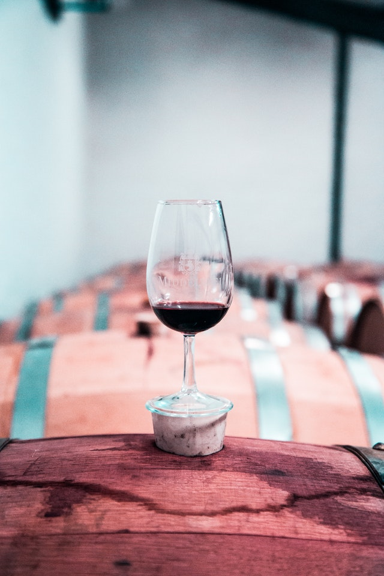

Maïs

Notre exploitation produit, également, de maïs pour les élevages (particulièrement pour les canards) et la vente non-alimentaire à Bénesse-Lès-Dax ainsi que dans une commune à côté, Pouillon.
Vignoble

Une autre des activités principales de Le Lasserre est la production de raisin pour une coopérative de vin rouge, rosé et blanc, La cave des vignerons landais (Tursan).
Vin
N'hésitez pas à aller faire un tour sur le site du Tursan pour voir les différents vins proposés.
Accéder au site de la coopérative